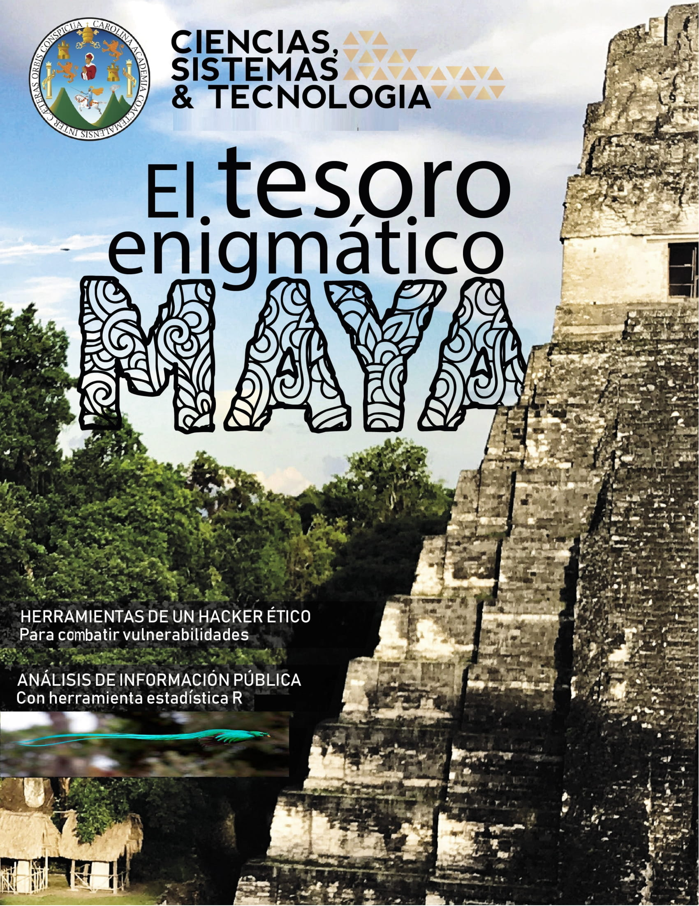

Escuela de Ingeniería en Ciencias y Sistemas - ECYS
2018-03-01

Revista Ciencias, Sistemas y Tecnología. Facultad de Ingenieria
Escuela de Ingeniería en Ciencias y Sistemas
Revista Ciencias, Sistemas y Tecnología - Issuu.com